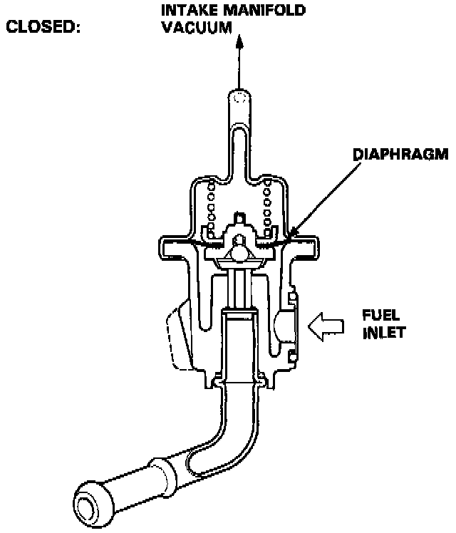
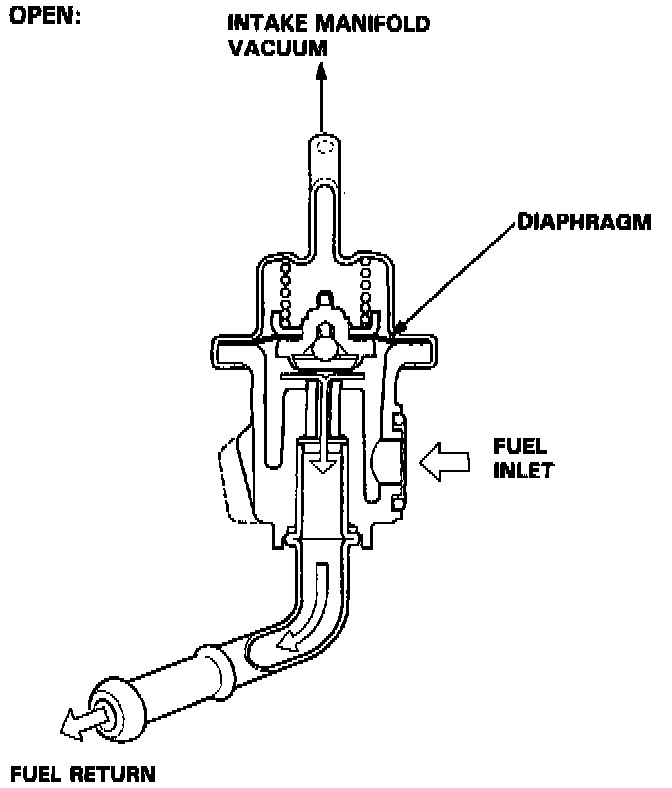

Fuel Pressure Regulator: Description and Operation
PURPOSE/OPERATION


The fuel pressure regulator maintains a constant fuel pressure to the fuel injectors. When the difference between the fuel pressure and manifold pressure exceeds (255 kPa, 36 psi), the diaphragm is pushed upward, and the excess fuel is fed back into the fuel tank through the return line.